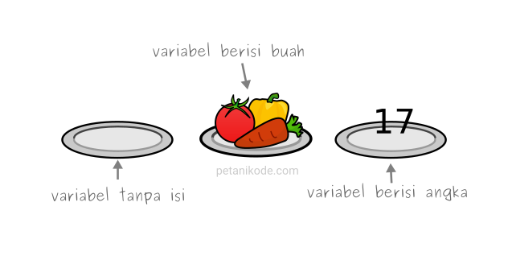

Tipe Data

Dalam pemrograman, tipe data merupakan konsep penting. Untuk dapat beroperasi pada variabel, penting untuk mengetahui sesuatu tentang tipenya. Tanpa tipe data, komputer tidak dapat menyelesaikan masalah di bawah ini :
var x = 11 + "Nama";

Apakah masuk akal untuk menambahkan "Nama" dengan sebelas? Apakah akan menghasilkan kesalahan atau akan memberikan hasil? JavaScript akan memperlakukan contoh di atas sebagai berikut :
var x = "11" + "Nama";
Ada 2 macam dari tipe data, yaitu :
Tipe Data Primitif
Kali ini kita akan membahas beberapa basic tipe data yaitu tipe data primitif.
Primitif (nilai primitif, tipe data primitif) adalah data yang bukan objek dan tidak memiliki method. Dalam JavaScript, ada 6 tipe data primitif, yaitu :
String, Number, Boolean, Null, Undefined, Symbol (ECMAScript 2015).
Namun untuk kali ini, kita hanya akan mempelajari tentang tipe data Number, String dan Boolean.Value dari tipe data number adalah nilai numerik. Dalam program JavaScript, tipe data number ditulis sebagai berikut :
50; // bilangan int
3.14; // bilangan desimal
Pengunaannya : let umur = 20
Tipe data dasar berikutnya adalah string. String digunakan untuk merepresentasikan teks. String ditulis dengan melampirkan kontennya dalam tanda kutip. Kita dapat menggunakan single quotes, double quotes, atau backticks untuk menandai string, selama tanda kutip di awal dan akhir string dibuat sama.
'Ini adalah kelas javascript'
"Ini adalah kelas javascript"
`Ini adalah kelas javascript`
Tanda kutip yang didahului oleh backslash tidak akan mengakhiri string tetapi menjadi bagian darinya. Ketika karakter "n" muncul setelah backslash (\n), itu ditafsirkan sebagai baris baru. Demikian pula, "t" setelah backslash (\t) berarti karakter tab.
"Ini baris pertama\nDan ini baris kedua";
//Output:
baris pertama
Dan ini baris kedua
Bagaimana dengan penulisan "Tambahkan dengan \n" ?
"Tambahkan dengan \"\\n\""
Bagimana dengan penulisan "Hari ini adalah hari Jum'at" ?
"Hari ini adalah hari Jum'at"
Boolean seringkali digunakan untuk nilai yang hanya memiliki dua kemungkinan, seperti "yes" dan "no" atau "on" dan "off". Untuk tujuan ini, JavaScript memiliki tipe Boolean, yang hanya memiliki dua nilai, true dan false.
console.log(3 > 2);
console.log(3 < 2);
// → false
Tipe Data Non Primitif
Ada 3 tipe data non primitif, yaitu :
Untuk penjelasan lebih lanjut, silahkan diklik masing-masing tipe data di atas ini.